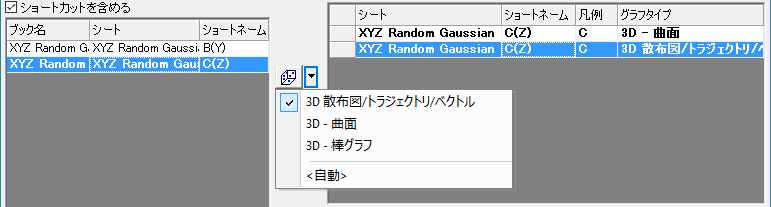

このレッスンでは3Dグラフ、等高線グラフ、プロファイルグラフの作成方法を学びます。それらのグラフのデータは、ワークシートのXYZ列、または行列ウィンドウのセルの配列として構成されている必要があります。
 | ダイアログのボタンを使用して、複数の水平線、垂直線、任意の線を追加することができます。グラフレイヤは適切なレイヤでプロファイルの曲線を表示します。プロファイルグラフは行列かワークシートのデータから作成することもできます。 |
| インポートウィザードはヘッダ行から変数を抽出するためにASCIIファイルを分解することもできます。すでに選択したファイルは完了ボタンをクリックしたときに適用されている事前定義フィルタを持っています。 |
| 異なる行列や仮想行列からのデータでも、それぞれに適切なオフセットの値を設定して平面図を離すことで、同じ3Dグラフのレイヤに一緒に作図することができます。これによって同じグラフで、関連するデータを一緒に分析することができます。 |
| パラメトリック関数は既存のグラフに追加することができ、実データのグラフのように統合することができます。3D Function Galleryページでサンプルをダウンロードすることができます。 |
プロジェクトファイルを保存します。